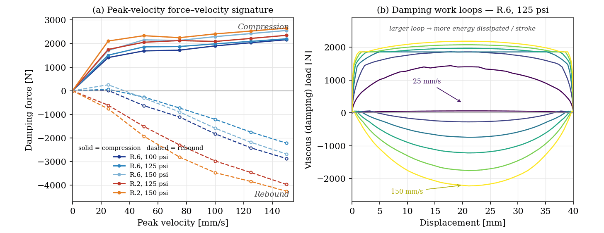
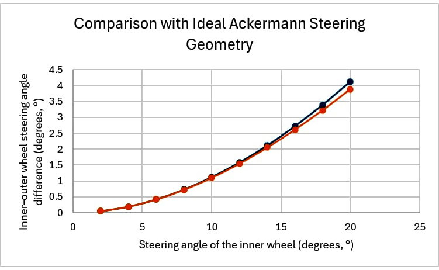
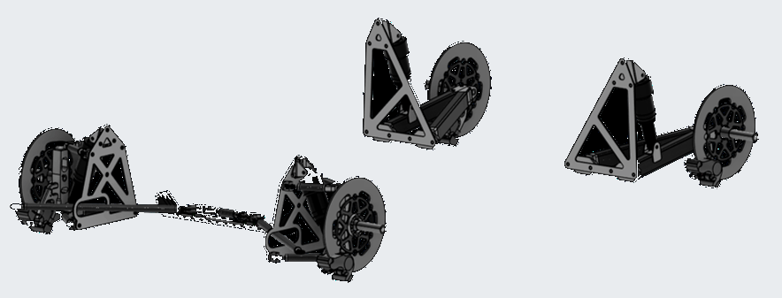

Prometheus Eco Racing / PYRFOROS IV subsystem · NTUA
Suspension & Steering.
The previous car had no suspension at all, and that is why its chassis was heavy. Adding one was not a ride-comfort decision — it was a structural one: a low-pass filter between the road and the monocoque, sized on a shock dynamometer rather than by feel.

FIG. 01 — Shock-dynamometer characterisation across five rebound / gas-pressure settings
A suspension is a structural decision
PYRFOROS III ran rigid and unsuspended. Vertical impact loads at the chassis mounting points exceeded 4.5 g, and the composite shell had to be over-built to survive them — extra plies whose entire job was to stop delamination from an impact that a spring and a damper would have absorbed first.
PYRFOROS IV replaces that with double-wishbone front corners, a trailing-arm rear, and a central steering linkage, all attaching to the shell through a clevis mounting system. Read as a structure rather than as a chassis component, it is a low-pass filter: it takes the high-frequency road-surface energy out before it reaches the composite. Peak transmitted chassis load falls by a reported 65%, and that is the number the monocoque's 2.1 mm average thickness is actually downstream of.
It also pays in rolling resistance, not just on the scales. On-track coast-down testing measured a 12% reduction in rolling resistance on uneven surfaces — a stable tyre contact patch, with the transient toe and camber variation that chassis flex used to introduce taken out. Toe and camber remain adjustable through the geometry, so the platform can be re-set rather than replaced as it ages.

The dampers were measured, not chosen
A damper specification that arrives as a part number is a guess. These were run on a shock dynamometer over a 40 mm stroke, gas-over-oil, across five rebound and gas-pressure configurations — R.6 at 100, 125 and 150 psi, and R.2 at 125 and 150 psi — and characterised on both the force–velocity signature and the work loop.
Per-cycle dissipated energy runs from 118 J at the softest setting to 191 J at the firmest, a 62% spread. That range is the useful output: it is the size of the tuning window the car actually has, expressed in the quantity that matters for absorbing road shock rather than in clicks.
The force–velocity slope is digressive at high speed — force rises steeply at low shaft velocities and then flattens. That is the shape you want here: firm enough to control the platform through the circuit's compulsory stop-and-go, compliant enough that a sharp road input bleeds off through the damper instead of arriving at the composite. Because the whole window is set by rebound adjuster and gas pressure, the car can be re-tuned for a different circuit surface by hardware alone, with no new parts.

Loads, joints and the steering that shares their envelope
The load path starts at the corner weights: 150 kg including the driver, at a 45% front bias, giving 331 N per front corner and 405 N per rear. Braking is sized on a 20% incline, and tyre pressure is carried at the manufacturer's 75 psi maximum under a safety factor of two.
Five load cases — weight, bump, braking and both cornering directions — were resolved into forces and moments at every front and rear suspension joint: the upper and lower arm pivots and the shock at the front, the arm pivots and shock pivot at the rear.
Every CFRP-to-aluminium interface in that path — each clevis and mounting bracket — carries a laminated glass-fibre isolation layer against galvanic corrosion, with joint loading validated to a safety factor of 3 under the per-lap load spectrum from the vehicle dynamics model.
Steering is the one part of this subsystem I did not do alone, and the split is worth stating. I guided the design and the working principle; a teammate did the calculations that achieve Ackermann steering and packaged the linkage inside the body. Knuckle geometry, tie-rod length and rack offset were solved simultaneously with the front wheel-arch profile — because the arch is also an aerodynamic enclosure, and the two constraints are one problem. The result tracks ideal Ackermann to within a fraction of a degree across the full lock range, referenced at about 12° of inner lock.
- 150 kg vehicle + driver, 45% front bias
- 331 N per front corner
- 405 N per rear corner
- Braking case on a 20% incline
- Tyre pressure at 75 psi max, safety factor 2
Thirty parts, every one replaceable
The subsystem is 30 part numbers at 5.47 kg, and every one of them is individually replaceable through the clevis mounting system — without disturbing the monocoque.
That is a paddock decision made at the drawing board. On a car whose structure is its bodywork, any repair that requires touching the shell is a repair that does not happen between sessions; the clevis interface exists so that a bent arm is a part swap rather than a laminate job. It is the same argument the wheel programme made when splitting the hub cut a pit stop from about seventeen minutes to under two.
One scoping note, because the tool matters when someone asks. The kinematics work here is described by its result rather than by the software that produced it: the underlying report does not state which package ran it, and I am not going to attach a certification I hold to an analysis I cannot confirm it was used for.